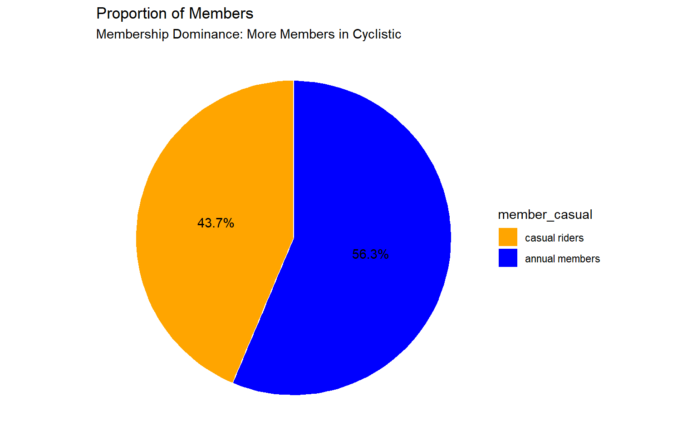
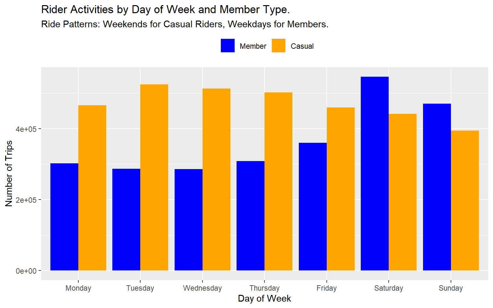
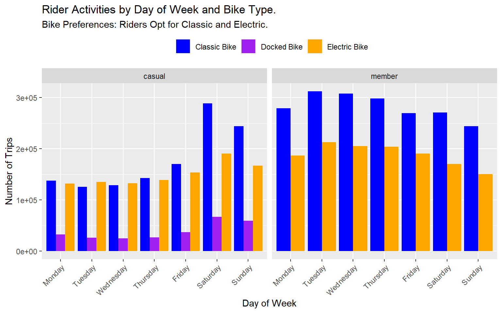
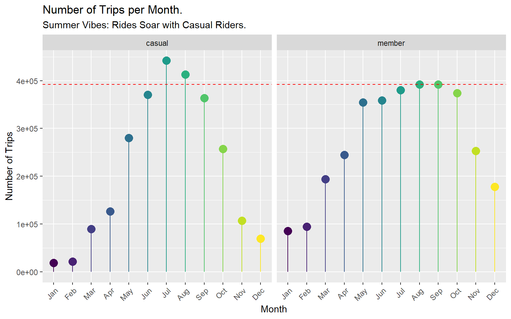
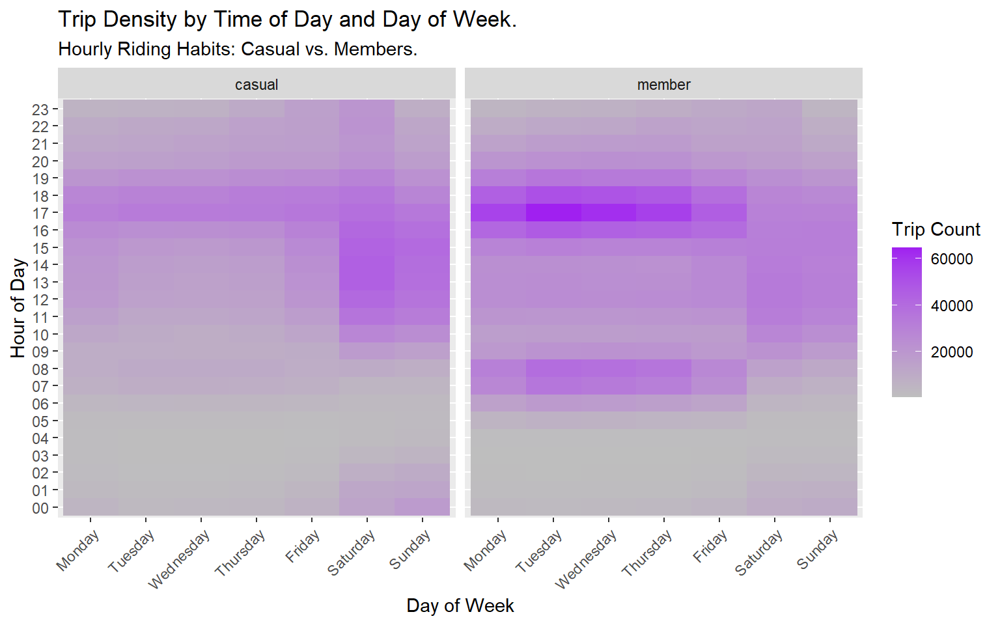
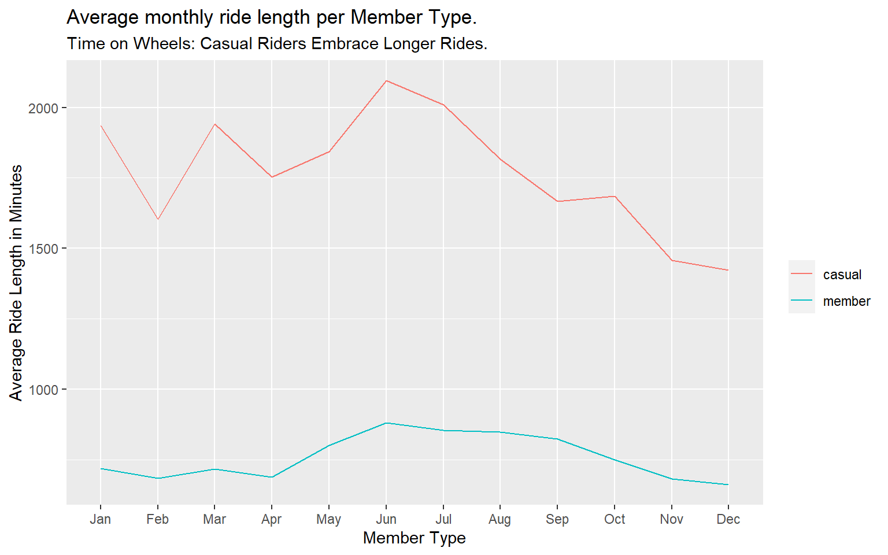

This case study focuses on analyzing the bike-share program of Cyclistic, a company in Chicago, with the goal of understanding the differences between annual members and casual riders. The objective is to design a new marketing strategy to convert casual riders into annual members. The analysis will leverage Cyclistic’s historical trip data and explore various trends and patterns.
Lily Moreno - Director of Marketing
Cyclistic Marketing Analytics Team
Cyclistic Executive Team
How do annual members and casual riders use Cyclistic bikes differently? Why would casual riders buy Cyclistic annual memberships? How can Cyclistic use digital media to influence casual riders to become members?
The data used in this analysis was sourced from the company’s Cyclistic’s historical trip data. The data consists of 1 year usage history between the months of June 2021 and May 2022.
The data consists of 1 year usage history between the months of June 2021 and May 2022. The data consists of 5,860,776 rows and 13 Columns as listed below:
| Column Name | Column Description |
|---|---|
| ride_id | Unique ride ID |
| rideable_type | Bike type |
| started_at | Starting time of ride |
| ended_at | Ending time of ride |
| start_station_name | Station ride started at |
| start_station_id | Station ID ride started at |
| end_station_name | Station ride ended at |
| end_station_id | Station ID ride ended at |
| start_lat | Latitude ride started at |
| start_lng | Longitude ride started at |
| end_lat | Latitude ride ended at |
| end_lng | Longitude ride ended at |
| member_casual | Membership type of rider |
# Load tidyverse package
library(tidyverse)
# Load DT package
library(DT)
# Load plotly package
library(plotly)
# Load knitr package
library(knitr)
# Set constant size for plots
knitr::opts_chunk$set(fig.width = 8, fig.height = 5)To begin the analysis, we need to import the monthly trip data for a period of 12 months. A quick pick of the first 50 rows of the data displayed, notice the missing values in some variables. It is necessary to further investigate the data structure and composition.
bikes_full <-
bind_rows(lapply(
list.files(
path = "E:/My Data Science Portfolio/Datasets/Bikeshare_Data",
pattern = "divvy-tripdata.csv$",
full.names = TRUE
),
read_csv
))
# Calculate total number of rows in data
cat("The bikeshare dataset has",nrow(bikes_full), "rows.")## The bikeshare dataset has 5860776 rows.# Display the first 100 rows of imported data
datatable(
bikes_full[1:100,],
options = list(pageLength = 20),
caption = "The first 100 rows of loaded data.",
fillContainer = T)To understand the data composition, the class of each variable together with the number and proportion of missing values for each variable will provide a deeper insight to the data structure and how it could be useful for analysis.
# Check for class of each variable
class_table <- sapply(bikes_full, class)
class_table <- data.frame(
Variable = names(class_table),
Class = as.character(class_table),
stringsAsFactors = FALSE
)
# Check for the proportion of missing values in full data
x <- data.frame(miss = colSums(is.na(bikes_full)),
prop = round((colSums(is.na(bikes_full)) / nrow(bikes_full)) * 100, 2))
properties <- cbind(class_table,
Values_missing = x[, 1],
Proportion_missing = x[, 2])
# Display the properties of the data
kable(head(properties, 20),
caption = "Table displaying the properties of data.")| Variable | Class | Values_missing | Proportion_missing |
|---|---|---|---|
| ride_id | character | 0 | 0.00 |
| rideable_type | character | 0 | 0.00 |
| started_at | character | 0 | 0.00 |
| ended_at | character | 0 | 0.00 |
| start_station_name | character | 823167 | 14.05 |
| start_station_id | character | 823164 | 14.05 |
| end_station_name | character | 878338 | 14.99 |
| end_station_id | character | 878338 | 14.99 |
| start_lat | numeric | 0 | 0.00 |
| start_lng | numeric | 0 | 0.00 |
| end_lat | numeric | 5036 | 0.09 |
| end_lng | numeric | 5036 | 0.09 |
| member_casual | character | 0 | 0.00 |
| start_coordinate | character | 0 | 0.00 |
| end_coordinate | character | 0 | 0.00 |
| ride_length | c(“hms”, “difftime”) | 3 | 0.00 |
| day_of_week | numeric | 0 | 0.00 |
Next, we’ll clean and format the data by creating new variables and dropping those not needed, especially those with high proportion of missing values, then prepare for analysis.
bikes_cleaned <- bikes_full %>%
mutate(
# Step 1: Create ride length, month of trip, and hour columns
# Convert started_at to POSIXlt datetime
time_started = as.POSIXlt(started_at, format = "%m/%d/%Y %H:%M"),
time_ended = as.POSIXlt(ended_at, format = "%m/%d/%Y %H:%M"),
ride_length = difftime(time_ended, time_started, units = "secs"),
# Extract month from datetime
month_of_trip = format(time_ended, format = "%m"),
# Extract hour from datetime
hour = format(time_started, format = "%H"),
# Step 2: Create and recode day_of_week to day names and order as factor
day_of_week = weekdays(time_started),
day_of_week = ordered(
day_of_week,
levels = c("Monday", "Tuesday", "Wednesday", "Thursday",
"Friday", "Saturday", "Sunday")
),
# Step 3: Create and recode months values to month abbreviations and order as factor
month_of_trip = month.abb[as.integer(month_of_trip)],
month_of_trip = ordered(
month_of_trip,
levels = c( "Jan", "Feb", "Mar", "Apr", "May", "Jun",
"Jul", "Aug", "Sep", "Oct", "Nov", "Dec")
)
) %>%
# Step 4: Remove unwanted columns
select(-starts_with("start_"),
-starts_with("end_"),
-ride_id,
-started_at,
-ended_at)
# # Display the first 100 rows of cleaned data
# datatable(
# bikes_cleaned[1:100,],
# options = list(pageLength = 20),
# caption = "The first 100 rows of cleaned and transformed data.",
# fillContainer = T)To highlight trends and relationships in the data, we can create visualizations.
# First calculate the split between member type
num_members <- bikes_cleaned %>%
count(member_casual)
# Pie chart to categorize member types
num_members %>%
mutate(percentage = round(n / sum(n) * 100, 1)) %>%
ggplot(aes(x = "", y = n, fill = member_casual)) +
geom_bar(stat = "identity",
width = 1,
color = "white") +
geom_text(aes(label = paste0(percentage, "%")),
position = position_stack(vjust = 0.5)) +
coord_polar("y", start = 0) +
labs(title = "Proportion of Members",
subtitle = "Membership Dominance: More Members in Cyclistic") +
scale_fill_manual(
values = c("orange", "blue"),
labels = c("casual riders", "annual members")
) +
theme_void() +
theme(legend.title = element_text("Member Type"))
There are more member riders than casual riders in Cyclistic for the period May 2021 to June 2022.
# Bar chart to compare member types' activities through the week
bikes_cleaned %>%
ggplot(aes(x = day_of_week, fill = member_casual)) +
geom_bar(position = "dodge") +
labs(
title = "Rider Activities by Day of Week and Member Type.",
subtitle = "Ride Patterns: Weekends for Casual Riders, Weekdays for Members.",
x = "Day of Week",
y = "Number of Trips"
) +
scale_fill_manual(values = c("blue", "orange"),
labels = c("Member", "Casual")) +
theme(legend.position = "top", legend.title = element_blank())
Casual riders tend to use the bikes more on weekends than weekdays, which is when members use the bikes more!
# Bar chart to compare member types' activities through the week with bike types
bikes_cleaned %>%
ggplot(aes(x = day_of_week, fill = rideable_type)) +
geom_bar(position = "dodge") +
labs(
title = "Rider Activities by Day of Week and Bike Type.",
subtitle = "Bike Preferences: Riders Opt for Classic and Electric.",
x = "Day of Week",
y = "Number of Trips"
) +
scale_fill_manual(
values = c("blue", "purple", "orange"),
labels = c("Classic Bike", "Docked Bike", "Electric Bike")
) +
facet_grid(. ~ member_casual) +
theme(
legend.position = "top",
legend.title = element_blank(),
axis.text.x = element_text(angle = 45, hjust = 1)
)
Casual riders show a small appetite for using the dock bikes, but the classic and electric bikes are more preferred by both types of members.
# Lollipop chart showing number of trips monthly
num_trips_month <- bikes_cleaned %>%
group_by(month_of_trip, member_casual) %>%
summarise(num_trips = n())
mem_max_trip <- num_trips_month %>%
filter(member_casual == "member") %>%
pull(num_trips) %>%
max()
num_trips_month %>%
ggplot(aes(x = month_of_trip, y = num_trips, color = month_of_trip)) +
geom_point(size = 4) +
geom_segment(aes(
x = month_of_trip,
xend = month_of_trip,
y = 0,
yend = num_trips
)) +
geom_hline(yintercept = mem_max_trip,
linetype = "dashed",
color = "red") +
facet_grid(. ~ member_casual) +
theme(
legend.position = "none",
axis.text.x = element_text(angle = 45, hjust = 1)
) +
labs(
title = "Number of Trips per Month.",
subtitle = "Summer Vibes: Rides Soar with Casual Riders.",
x = "Month",
y = "Number of Trips"
)
The summer months have a higher number of rides generally, especially during the months of June, July and August, which is also when casual riders are more active the members.
# Heatmap to show Trip Density by Time of Day and Day of Week
bikes_cleaned %>%
group_by(hour, day_of_week, member_casual) %>%
summarise(trip_count = n()) %>%
ggplot(aes(x = day_of_week, y = hour, fill = trip_count)) +
geom_tile() +
facet_grid(. ~ member_casual) +
labs(
title = "Trip Density by Time of Day and Day of Week.",
subtitle = "Hourly Riding Habits: Casual vs. Members.",
y = "Hour of Day",
x = "Day of Week",
fill = "Trip Count"
) +
scale_fill_gradient(low = "grey", high = "purple") +
theme(axis.text.x = element_text(angle = 45, hjust = 1))
Casual riders tend to use the bikes more during weekends, while members are more active during weekdays. On weekdays, Casual riders are more active during the evening peak hours while Members ride more during the morning and evening peak hours.
# Line plot to show Monthly Average Ride Lengths between Casual riders and Members
bikes_cleaned %>%
filter(!is.na(ride_length)) %>%
group_by(month_of_trip, member_casual) %>%
summarize(average_ride_length = mean(ride_length)) %>%
ggplot(
aes(
x = month_of_trip,
y = average_ride_length,
group = member_casual,
color = member_casual
)
) +
geom_line() +
labs(
title = "Average monthly ride length per Member Type.",
subtitle = "Time on Wheels: Casual Riders Embrace Longer Rides.",
x = "Member Type",
y = "Average Ride Length in Minutes"
) +
scale_fill_manual(values = c("orange", "blue")) +
theme(legend.title = element_blank())
Overall, casual riders tend to ride for longer compared to members.
The analysis of the bike data was hindered by missing data and information. Several columns, including start station names, end station, and station IDs, contained missing data, impacting the accuracy of the findings. Moreover, the absence of age and gender information for the riders limited the understanding of their influence on bike usage and hindered targeted marketing efforts. These limitations might have result in an incomplete representation of bike usage patterns, preventing the identification of preferences and usage patterns among different demographic groups.
To address these issues in future research, techniques for imputing missing data could be applied, and efforts to collect additional data on age and gender information should be implemented. By mitigating these limitations, future analyses would offer more comprehensive insights into bike usage and enable more effective targeting strategies based on demographic characteristics.
Run specific campaigns targeting casual riders at the stations during weekends, and evening peak periods during the weekdays.
Marketing campaigns to get casual riders to become annual members should run more during the summer months, and specifically during the months of June, July and August when Casual riders show more activeness.
Marketing campaigns could showcase the essence of becoming members by highlighting the exclusive benefits that members receive, such as significant discounts on longer rides.